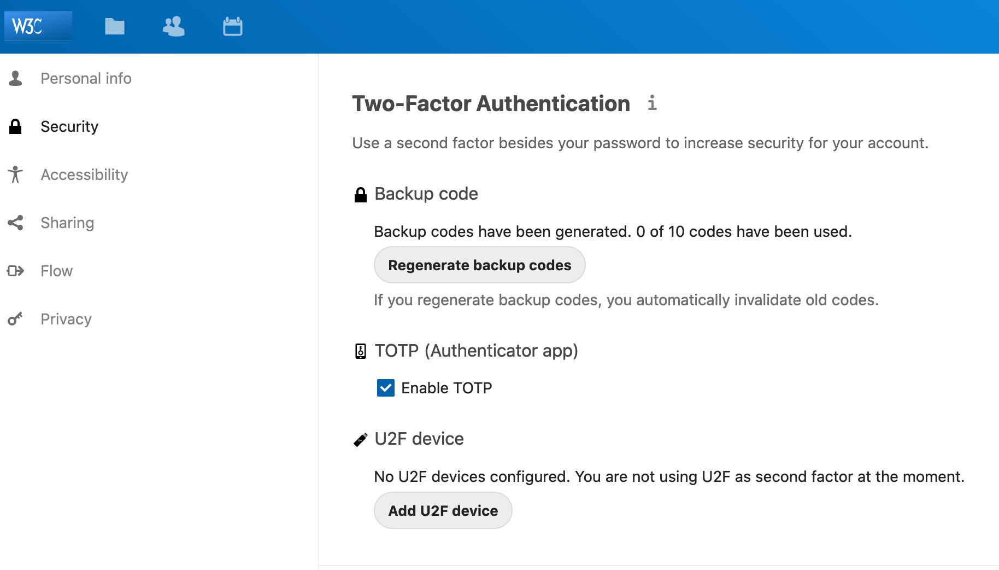
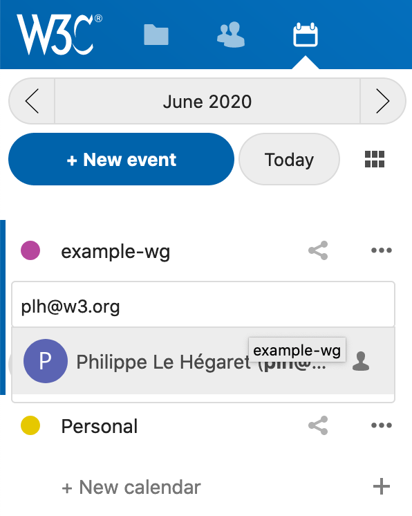
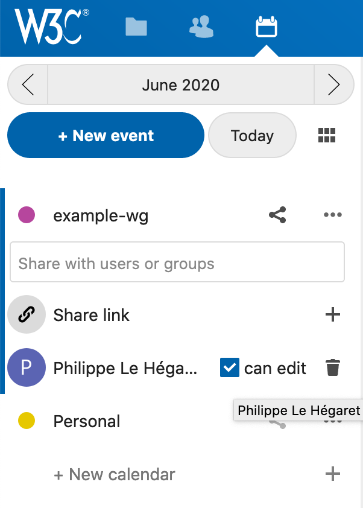
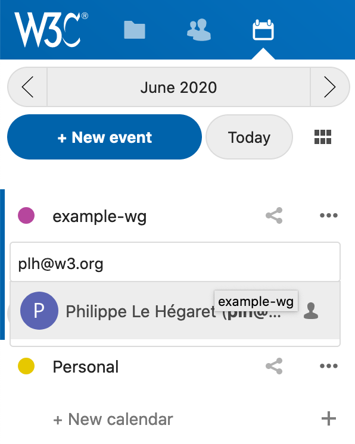
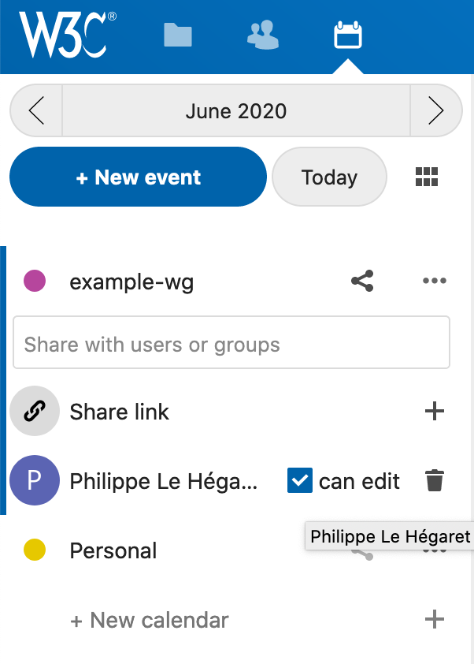
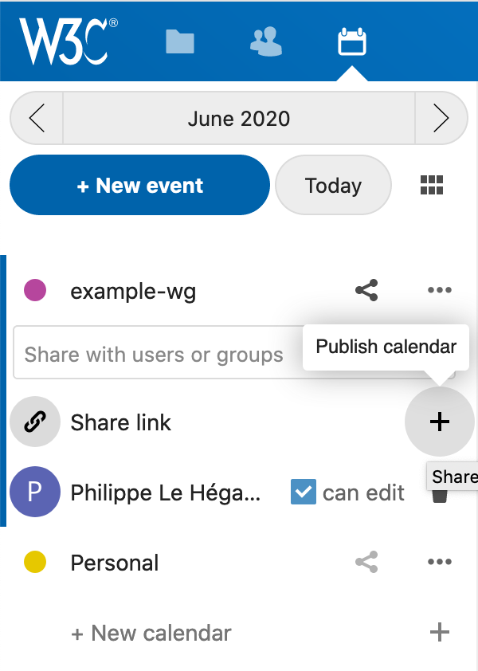
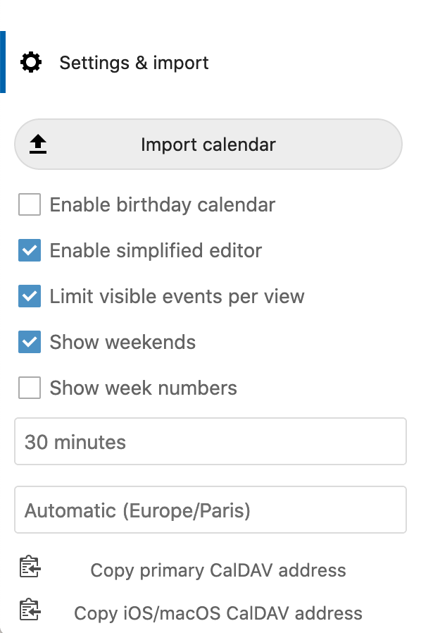

This Guidebook is the collected wisdom of the W3C Group Chairs and other collaborators.
This Guidebook is the collected wisdom of the W3C Group Chairs and other collaborators.
This document describes the way to use the CalDAV-based calendar server for sharing calendars with groups. Chairs and Team contacts can access the service at to create and share calendars.
Chairs and W3C Staff can use the service and create one or more calendars for their groups and share them publicly. Editing rights should be shared with other Chair persons and Staff. The calendar tool itself is not accessible to the public, so make sure that you "publish" a calendar to make it available.
First, log into the service using your W3C account credentials. In the main screen, click on the icon at the top-right corner and choose Settings. Adjust the security settings to setup 2FA as you wish, for example using TOTP.

Note that if you use an external application to connect to the server, you need to generate an "app password" (at the bottom of the same security settings page) that you will providing to the external application.
You can now start using the calendar app by clicking the calendar icon in the top bar. Create a calendar with the 'new calendar' item, make sure you choose an explicit naming (including the name of the group is generally a good idea). Share it with other chairs or team contacts, giving them the right to edit the calendar. You may search for users or groups by typing their names, email address or group id and find them in the drop-down list.
 

To give access to the calendar information to the rest of the W3C community (in particular your group) you have to publish it. Use the "publish" button with a '+' sign. Once it is published, you can copy the public link to the clipboard, or send it by email, copy the subscription link (DAV uri) or the embed code (iframe code, e.g. to add it to a group webpage).

You can start creating events using this online tool, or in your own CalDAV client if you prefer. The "Settings and import" menu in the bottom left corner also gives you the CalDAV uris to be used when setting up client applications (i.e. "server address" in a CalDAV account).
More information on using calendars and setting up clients can be found in the nextcloud server documentation.
If you encounter difficulties, please send an email to sysreq@w3.org. We will gather more information in this document thanks to your feedback.